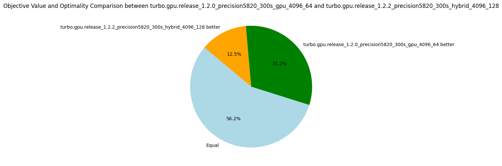
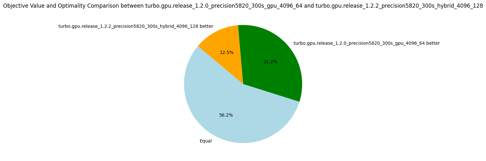
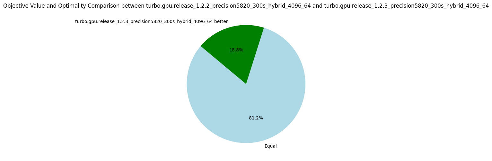
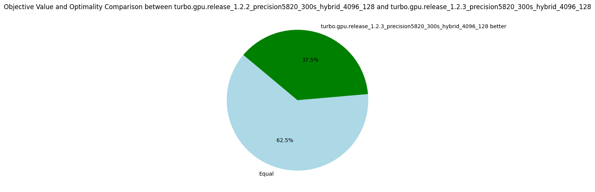
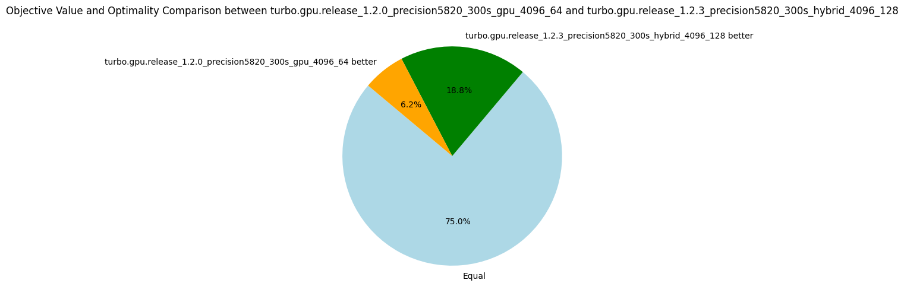

v1.2.{1,2,3}: Open Hackathon
17 October 2024. We are participating in the Poland Open Hackathon. This page summarizes our progresses and experience. The hackathon spans 2 weeks, beginning with a meeting on 15 October to explain the GH200 architecture that powers the Helios HPC, how to connect and run jobs on it, and then discuss with our mentors: Akif Çördük (Nvidia), Alice Boucher (Nvidia), Michel Herrera Sanchez. Among the mentors, we are fortunate to have two engineers from Nvidia working on cuOpt and a linear programming solver.
During the first meeting, I try to compile Turbo on the Helios HPC and... boom, nvcc is killed by the memory manager due to excessive memory usage.
I encountered a similar problem last year and reported the bug to Nvidia.
The bug was closed as "will not fix", citing that our kernel is simply too large and needed to be split into smaller kernels.
By adding __noinline__ attributes in key places, I could work around the bug and compile it on sm_70 and sm_86 architectures.
It seems that for sm_90 architectures (of the GH200), the compiler is again doing very aggressive optimizations, and Turbo is just too large for it.
Although the full GPU version avoids memory transfers between the CPU and GPU, we still hit other bottlenecks due to the kernel's size such as high register pressure. The next meeting is planned on 22 October, for the whole day, and our code is not compiling---not the best start for this hackathon. After a few days, I developed a new hybrid algorithm where the propagation loop runs on the GPU, and the search runs on the CPU. This solution successfully compiles on Helios.
The main event takes place online on 28, 29 and 30 of October and each time we stayed connected online and discussed with the mentors as needed from around 9AM to 3 or 4PM.
Let's see an executive summary of this hackathon:
- 15 October 2024: Turbo 1.2.0 is not compiling on Helios (ptxas is memkill).
- Reason: Kernel is too large.
- 22 October 2024: New design with a smaller kernel (Turbo v1.2.1).
- The CPU controls the search loop, a kernel is run each time we propagate.
- Use
NCPU threads, each launching a kernel with 1 block using stream. - Compiling, but too slow, too many streams (only
1628nodes per second...).
- 28 October 2024: New design with a persistent kernel (v1.2.2).
NCPU threads communicate withNblocks of a persistent kernel.- Compiling, on-par with the full GPU version.
- 30 October 2024: Deactivation of entailed propagators (v1.2.3).
- Use CUB scan to deactivate propagators that are entailed during search.
- Obtained 10% speed-up.
Hybrid Dive and Solve Algorithm (v1.2.2)
If you don't know the "propagate-and-search" algorithm of constraint programming, please watch this video I made for the AAAI conference (thanks Covid), starting at 5'30'' (if you are familiar with GPUs). It also explains how this algorithm is executed in parallel on GPU.
We keep the same algorithm as full-GPU Turbo (option -arch=gpu) but only performs the propagation on the GPU (option -arch=hybrid).
The algorithm consists of two parts:
dive(root, path): From the root of the search tree, commit to the path given to reach a nodesubrootat a fixed depth.solve(subroot): Solve the subproblemsubrootby propagate and search.- When a subproblem has been completely explored, we take a new path to explore if there is any remaining.
During the dive and solve operations, the propagation step is always executed on the GPU. Starting from version 1.2.2, we execute a single kernel and each CPU thread interacts with a single block of that persistent kernel. We compare the full-GPU architecture and this hybrid architecture in the following table (this is on my desktop computer (RTX A5000) due to 1.2.0 not compiling on Helios).
| Metrics | Normalized average [0,100] | Δ v1.2.0 | #best (_/16) | Average | Δ v1.2.0 | Median | Δ v1.2.0 |
|---|---|---|---|---|---|---|---|
| Nodes per second | 93.93 | -4% | 7 | 10271.03 | -1% | 2519.29 | -19% |
| Fixpoint iterations per second | 95.76 | -2% | 7 | 60155.16 | -1% | 31502.75 | -1% |
| Fixpoint iterations per node | 99.76 | +2% | 6 | 16.77 | +15% | 9.00 | 0% |
The hybrid version is slightly less efficient than with the full-GPU version, but considering the number of round-trips between the CPU and GPU I was expecting worst results. Nonetheless, because the kernel is now smaller, we can execute more blocks in parallel. With 128 blocks, we surpass the version v1.2.0 as shown in the following table.
| Metrics | Normalized average [0,100] | Δ v1.2.0 | #best (_/16) | Average | Δ v1.2.0 | Median | Δ v1.2.0 |
|---|---|---|---|---|---|---|---|
| Nodes per second | 94.97 | +5% | 8 | 13475.41 | +29% | 3029.66 | -2% |
| Fixpoint iterations per second | 94.53 | +4% | 8 | 81399.98 | +33% | 33540.01 | +5% |
| Fixpoint iterations per node | 97.39 | 0% | 11 | 15.43 | +5% | 9.20 | +2% |
In terms of the best objectives found, the hybrid version performs better with 64 blocks than with 128 blocks. Indeed, with 128 blocks, we explore a wider search tree at the cost of exploring fewer nodes per block. It is known as the exploration-exploitation dilemma. Until we implement better search strategies and test with a longer timeout, I prefer to stick to the nodes per second metric in order to compare the raw efficiency.
 

Deactivation of Entailed Propagators and No Atomic (v1.2.3)
A frequent optimization is to avoid calling propagators that are entailed in the fixpoint loop.
To illustrate with a simple example, if x=[1,3], we know for certain that x > 0 is satisfied and will remain satisfy for the rest of the exploration of the current subtree.
Therefore, the propagator implementing x > 0 no longer needs to be executed.
To deactivate entailed propagators, we maintain an array vector<int> indexes giving the indexes of the propagators not yet entailed.
The fixpoint loop can be easily modified to iterate over indexes instead of iterating from 0 to P where P is the number of propagators.
Furthermore, it is easy to verify in parallel that each propagator is entailed, as this is a read-only check.
We can assign each thread to one propagator to check the entailment.
This step produces a mask vector<bool> mask representing which propagators are still active.
The challenging part is to create the new array indexes representing that subset in parallel.
This is a known problem in GPU programming and the scan algorithm (aka. prefix sum) allows to parallelize this step and to copy into a new array indexes2 only the values indexes[i] such that mask[indexes[i]] is true.
This version comes with a more important optimization. It is actually known that tearing on integers is not possible in CUDA (i.e., a thread writing half of an integer while the other thread write the other half). Although it is not formally documented, much code relies on load/store atomicity of primitive types according to our mentors. Therefore, we can safely remove the atomic unlike what I concluded in the v1.2.0 post.
This optimization proves very useful with a 17% increase in nodes per second with 64 blocks, and a 28% increase with 128 blocks. Previously, removing atomic variables accounted for a 13% increase, which is likely a key factor in this speed-up. Deactivating propagators does not hurt, but seems to be less critical than other optimizations.
(-or 64 -arch hybrid)
| Metrics | Normalized average [0,100] | Δ v1.2.2 | #best (_/16) | Average | Δ v1.2.2 | Median | Δ v1.2.2 |
|---|---|---|---|---|---|---|---|
| Nodes per second | 99.59 | +17% | 14 | 11786.66 | +15% | 3252.29 | +29% |
| Fixpoint iterations per second | 100.00 | +24% | 16 | 81532.87 | +36% | 43905.01 | +39% |
| Fixpoint iterations per node | 99.08 | +5% | 4 | 18.60 | +11% | 9.10 | +1% |
(-or 128 -arch hybrid)
| Metrics | Normalized average [0,100] | Δ v1.2.2 | #best (_/16) | Average | Δ v1.2.2 | Median | Δ v1.2.2 |
|---|---|---|---|---|---|---|---|
| Nodes per second | 99.96 | +28% | 15 | 18543.27 | +38% | 4082.88 | +35% |
| Fixpoint iterations per second | 100.00 | +35% | 16 | 129459.21 | +59% | 48995.62 | +46% |
| Fixpoint iterations per node | 98.94 | +5% | 4 | 17.00 | +10% | 9.19 | 0% |
This new version also dominates the previous one in terms of objective found. Further, we almost close the gap with the full GPU version v1.2.0 which remains better on only one problem.
  
Helios Benchmarks
We tested the new versions on Helios which is equipped with a superchip GH200 consisting of a CPU of 72 cores and a H200 GPU with 132 SMs whereas my desktop has a CPU with 10 cores and a RTX A5000 GPU with 64 SMs. The speedup observed with the GH200 demonstrates excellent scalability. Doubling the number of SMs effectively doubles the number of nodes per second. The following table compares the hybrid versions with 1 block per SM on my desktop and Helios.
| Metrics | Normalized average [0,100] | Δ v1.2.2 | #best (_/16) | Average | Δ v1.2.2 | Median | Δ v1.2.2 |
|---|---|---|---|---|---|---|---|
| Nodes per second | 100.00 | +128% | 16 | 33232.29 | +224% | 7796.88 | +209% |
| Fixpoint iterations per second | 100.00 | +137% | 16 | 184996.45 | +208% | 69359.75 | +120% |
| Fixpoint iterations per node | 98.32 | +4% | 6 | 19.11 | +14% | 10.03 | +11% |
We have more than a linear scaling, probably due to the larger L1 cache and other improvement in the H200 GPU. We further improve the nodes per second metric by using 2 blocks per SM (264 blocks).
| Metrics | Normalized average [0,100] | Δ v1.2.2 | #best (_/16) | Average | Δ v1.2.2 | Median | Δ v1.2.2 |
|---|---|---|---|---|---|---|---|
| Nodes per second | 99.83 | +21% | 14 | 40330.87 | +21% | 9945.53 | +28% |
| Fixpoint iterations per second | 98.86 | +18% | 15 | 258809.97 | +40% | 78749.49 | +14% |
| Fixpoint iterations per node | 97.30 | -2% | 10 | 18.38 | -4% | 9.37 | -7% |
Finally, the version 1.2.3 gives an additional speedup, comparable than the one obtained on my desktop, as shown in the next table.
| Metrics | Normalized average [0,100] | Δ v1.2.2 | #best (_/16) | Average | Δ v1.2.2 | Median | Δ v1.2.2 |
|---|---|---|---|---|---|---|---|
| Nodes per second | 99.70 | +26% | 14 | 45520.83 | +13% | 15676.14 | +58% |
| Fixpoint iterations per second | 100.00 | +36% | 16 | 360362.70 | +39% | 116916.62 | +48% |
| Fixpoint iterations per node | 98.97 | +7% | 4 | 20.17 | +10% | 10.45 | +12% |
Summary Hackathon
This hackathon was highly productive. It allowed me to verify the correctness of the persistent kernel design (v1.2.2) and to use CUB to eliminate entailed propagators (v1.2.3). More importantly, I discussed the overall design of Turbo, addressing the overly generic approach (code working both on CPU and GPU, using modern C++ patterns, etc.) which hindered performance.
During the three days, we also discussed a new design of propagators and the result will be in a post-hackathon version 1.2.4, so stay tuned!
| short_uid | avg_nodes_per_second | problem_optimal | problem_sat | problem_unknown |
|---|---|---|---|---|
| turbo.hybrid_GH200_1.2.3_4096_264 | 45520.8 | 0 | 14 | 2 |
| turbo.hybrid_GH200_1.2.2_4096_264 | 40330.9 | 0 | 14 | 2 |
| turbo.hybrid_GH200_1.2.3_4096_132 | 36589.3 | 0 | 14 | 2 |
| turbo.hybrid_GH200_1.2.2_4096_132 | 33232.3 | 0 | 14 | 2 |
| turbo.hybrid_RTXA5000_1.2.3_4096_128 | 18543.3 | 0 | 14 | 2 |
| turbo.hybrid_RTXA5000_1.2.2_4096_128 | 13475.4 | 0 | 14 | 2 |
| turbo.hybrid_RTXA5000_1.2.3_4096_64 | 11786.7 | 0 | 14 | 2 |
| turbo.gpu_RTXA5000_1.2.0_4096_64_noatomics | 11684.4 | 0 | 14 | 2 |
| turbo.gpu_RTXA5000_1.2.0_4096_64 | 10412.7 | 0 | 14 | 2 |
| turbo.hybrid_RTXA5000_1.2.2_hybrid_4096_64 | 10271 | 0 | 14 | 2 |
| turbo.hybrid_RTXA5000_1.2.1_hybrid_4096_64 | 1628.89 | 0 | 14 | 2 |